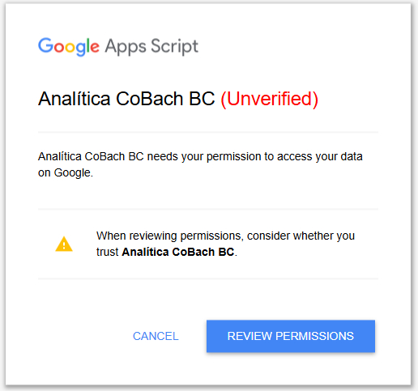
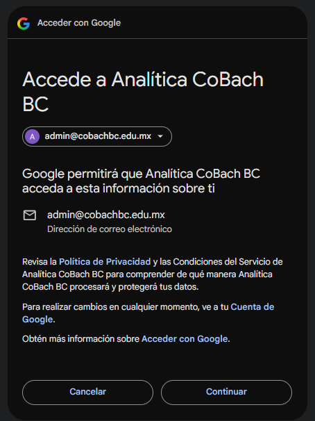
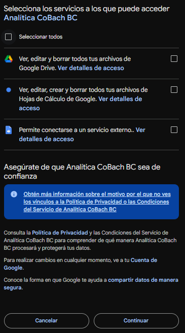

CoBach BC - Departamento de Informática
La primera vez que abras el asistente, Google te pedirá confirmar tu identidad y autorizar el acceso. En las siguientes visitas entrarás directo, sin interrupciones.
Una de las pantallas tiene una advertencia en rojo - es normal. Esta guía te explica qué hacer.

Google marca como "no verificada" a cualquier herramienta interna que no haya pasado su proceso de revisión pública — pensado para apps comerciales, no para uso institucional. Data Bot fue desarrollado por el Departamento de Informática de CoBach BC.
Lo que debes hacer:

Selecciona tu cuenta @cobachbc.edu.mx y haz clic en "Continuar".

Lo que debes hacer: selecciona los tres permisos y haz clic en "Continuar". Después entrarás directo al asistente.
Google recuerda tu autorización. No verás estas pantallas de nuevo al abrir el asistente.
¿Problemas? Contacta al Departamento de Informática.